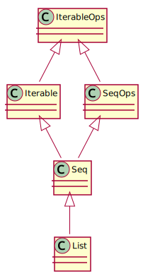

next() Collections
Julien Richard-Foy
Scala Center http://scala.epfl.ch
Scala.io – November 2, 2017
http://julienrf.github.io/2017/collections
List Hierarchy
List (Actual) Hierarchy
List New Hierarchy 
Ops classestrait IterableOps[A, CC[_], C] {
def take(n: Int): C = …
def map[B](f: A => B): CC[B] = …
}trait List[A] extends Iterable[A] with IterableOps[A, List, List[A]]Ops classestrait IterableOps[A, CC[_], C] {
def take(n: Int): C = …
def map[B](f: A => B): CC[B] = …
}trait StringOps extends IterableOps[Char, IndexedSeq, String]map Implementationtrait TraversableLike[+A, +Repr] {
def map[B, That](f: A => B)(implicit bf: CanBuildFrom[Repr, B, That]): That = {
val b = bf(this)
for (x <- this) b += f(x)
b.result
}
}this collection and of the resulting collectionStream or views?map Implementation on Viewstrait TraversableViewLike[+A, +Repr] extends TraversableLike[A, Repr] {
override def map[B, That](f: A => B)(implicit bf: CanBuildFrom[This, B, That]): That = {
newMapped(f).asInstanceOf[That]
}
}object TraversableView {
implicit def canBuildFrom[A] =
new CanBuildFrom[TraversableView[_], A TraversableView[A]] {
def apply() = new Builder[A, Nothing] {
def +=(elem: A): this.type = this
def result() = throw new UnsupportedOperationException("TraversableView.Builder.result")
}
}
}CanBuildFrom instancetrait IterableOps[A, CC[_], C] {
def map[B](f: A => B): CC[B] = fromIterable(View.Map(this, f))
}Viewsobject View {
case class Map[A, B](underlying: Iterable[A], f: A => B) extends View[B] {
def iterator() = underlying.iterator().map(f)
}
}IteratorIterators, Views can be aliased without dangertrait IterableOps[A, CC[_], C] {
def map[B](f: A => B): CC[B] = fromIterable(View.Map(this, f))
def fromIterable[E](it: Iterable[E]): CC[E]
}fromIterable implementation decides whether to evaluate the collection elements or notfromIterable trait List[+A] extends Iterable[A] with IterableOps[A, List, List[A]] {
def fromIterable[E](it: Iterable[E]): List[E] =
(List.newBuilder[E]() ++= it).result()
}trait View[+A] extends Iterable[A] with IterableOps[A, View, View[A]] {
def fromIterable[E](it: Iterable[E]): View[E] =
new View[E] {
def iterator() = it.iterator()
}
}CanBuildFrom map Operation on List[A]
map Operation on TreeMap[A, B]
map Operation on TreeMap[A, B]
CanBuildFrom is powerful trait GenTraversableLike[+A, +Repr] {
def map[B, That](f: A => B)(implicit bf: CanBuildFrom[Repr, B, That]): That
}One definition.
Works with String, List[A], TreeSet[A], HashMap[K, V], SortedMap[K, V].
map Operation on List[A]
map Operation on TreeMap[K, V]
CanBuildFrom was more than that!CanBuildFrom was one of the basic building block for generic programming over collections:
Future.sequenceCanBuildFrom trait BuildFrom[From, A, C] {
def fromSpecificIterable(from: From)(it: Iterable[A]): C
}From is the type of a source collectionCanBuildFrom trait BuildFrom[From, A, C] {
def fromSpecificIterable(from: From)(it: Iterable[A]): C
}implicit class HasDistinctBy[A, CC[X] <: Iterable[X]](coll: CC[A]) {
def distinctBy[B, C](f: A => B)(implicit bf: BuildFrom[CC[A], A, C]): C =
bf.fromSpecificIterable(coll)(new View[A] {
def iterator() = …
})
}import play.api.libs.json._
implicit def iterableReads[A, C <: Iterable[A]](implicit
factory: Factory[A, C],
ra: Reads[A]
): Reads[C] = Reads[C] {
case JsArray(elts) => JsResult.traverse(elts)(ra.reads)(factory)
case _ => JsError("error.expected.jsarray")
}
val readsList = Reads.of[List[Int]]
val readsSortedMap = Reads.of[SortedMap[Instant, BigDecimal]]Traversable Stack, UnrolledBuffer, LinkedList nor “paged” collection…val xs = List(1 -> 'a', 2 -> 'b', 3 -> 'c')
val vector = xs.to(Vector) // Before: xs.to[Vector]
val map = xs.to(Map) // Before: xs.toMapto operation now takes a value as parametergroupMap case class User(name: String, age: Int)
// Before:
def namesByAge(users: Seq[User]): Map[Int, Seq[String]] =
users.groupBy(_.age).mapValues(_.map(_.name))
// With `groupMap`:
def namesByAge(users: Seq[User]): Map[Int, Seq[String]] =
users.groupMap(_.age)(_.name)LazyList Stream has been remamed to LazyListTuple2Zipped scala> val xs = Vector(1, 2, 3)
xs: Vector[Int] = Vector(1, 2, 3)
scala> (xs, xs).zipped.map(_ + _)
res0: Vector[Int] = Vector(2, 4, 6)(xs zip xs).map { case (x1, x2) => x1 + x2 }Tuple2Zipped
Tuple2ZippedLazyZip2 val xs = Vector(1, 2, 3)
(xs lazyZip xs).map(_ + _)
val buffer = ArrayBuffer(1, 2, 3)
buffer.mapInPlace(x => x + 1)InPlace do not create a copy of the collectionscala.Seq[A] = ? scala.Seq[A] = scala.collection.immutable.Seq[A]ImmutableArrayArraySeq?lazyFoldRight? EPronovost
EPronovost  Ichoran
Ichoran  LPTK
LPTK  NthPortal
NthPortal  SethTisue
SethTisue  allanrenucci
allanrenucci  biboudis
biboudis  esarbe
esarbe  julienrf
julienrf  marcelocenerine
marcelocenerine  nicolasstucki
nicolasstucki  odd
odd  odersky
odersky  olafurpg
olafurpg  pnf
pnf  shawjef3
shawjef3  sjrd
sjrd  smarter
smarter  stephennancekivell
stephennancekivell  szeiger
szeiger  tpolecat
tpolecat  xavier-fernandez
xavier-fernandez